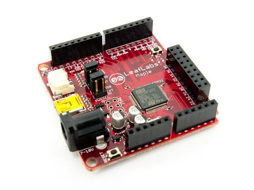

The Maple board consists of the essentials: a fast processor with lots of peripherals. At the center of Maple is a 72MHz ARM Cortex M3 chip, providing the increased computational power desired by more advanced users. In the past, ARM processors were notoriously unfriendly in non-professional environments due to proprietary tool chains and unfamiliar instruction sets. Because of this, they were conspicuously absent from classrooms and hobbyists’ workbenches. Leaf aims to change this by providing an ARM tool-chain built from open source components and a programming environment that is intuitively easy to use. For those of us who love and are familiar with Arduino, Maple is offered in an Arduino-compatible format, complete with Arduino pin layouts and programming environment. In the future, a Cortex native version is available in order to take full advantage of this fantastic micro-controller.
Model:DEV101D2O

The Leaf Maple is a microcontroller board based on the STM32F103RB microprocessor. The Maple runs at a maximum of 72 MHz, has 39 digital input/output pins, 16 analog inputs, native full speed USB, 3 USARTs (hardware serial ports), integrated SPI/I2C support, a power jack, and a reset button. Maple is programmable over USB via our provided DFU bootloader, no extra hardware required! Users can also program the onboard program flash via external JTAG interface. Maple offers security support for read/write protected addresses, as well as User and Handler processor modes. It has a real-time sysTick, useful for a real time OS or any timing senstitive applications. 6 advanced interrupt timers will help you here as well. Maple can be powered via USB, a wall adapter, or it can run off of a rechargeable lipo battery (see below for more info). The Maple is compatible with shields designed for the Arduino Duemilanove or Diecimila.
It is the schematic, the circuit about Eagle resource like .pdf should linked here in order to avoid memory exhausted.
Maple is a great way to get started with an advanced 32 bit-processor that, until now, has principally lived in the commercial domain. Take your projects to the next level with Maple’s fast clock, sophisticated interrupt architecture, and loads of built-in peripherals.
Maple can be programmed using an Arduino-style, sketch-based programming environment, which is open-source and can be downloaded online at our website. The Cortex-M3 on Maple comes pre-programmed with a boot-loader – allowing users to upload new code onto it using the USB interface (supported directly by the Cortex-M3), without the need for an external hardware programmer. You can also program the microcontroller directly with an external JTAG interface.
The projects and application examples.
All the components used to produce the product.
Please list your question here:
If you have questions or other better design ideas, you can go to our forum or wish to discuss.
| Revision | Descriptions | Release Date |
|---|---|---|
| v? | Initial public release | Dec 27, 2010 |
Bug Tracker is the place you can publish any bugs you think you might have found during use. Please write down what you have to say, your answers will help us improve our products.
The Additional Idea is the place to write your project ideas about this product, or other usages you've found. Or you can write them on Projects page.
Click here to buy : http://www.seeedstudio.com/depot/leaf-maple-cortex-m3-p-670.html?cPath=132_137.
Other products and resources.
This documentation is licensed under the Creative Commons Attribution-ShareAlike License 3.0 Source code and libraries are licensed under GPL/LGPL, see source code files for details.
Links to external webpages which provide more application ideas, documents/datasheet or software libraries
Copyright (c) 2008-2016 Seeed Development Limited (www.seeedstudio.com / www.seeed.cc)